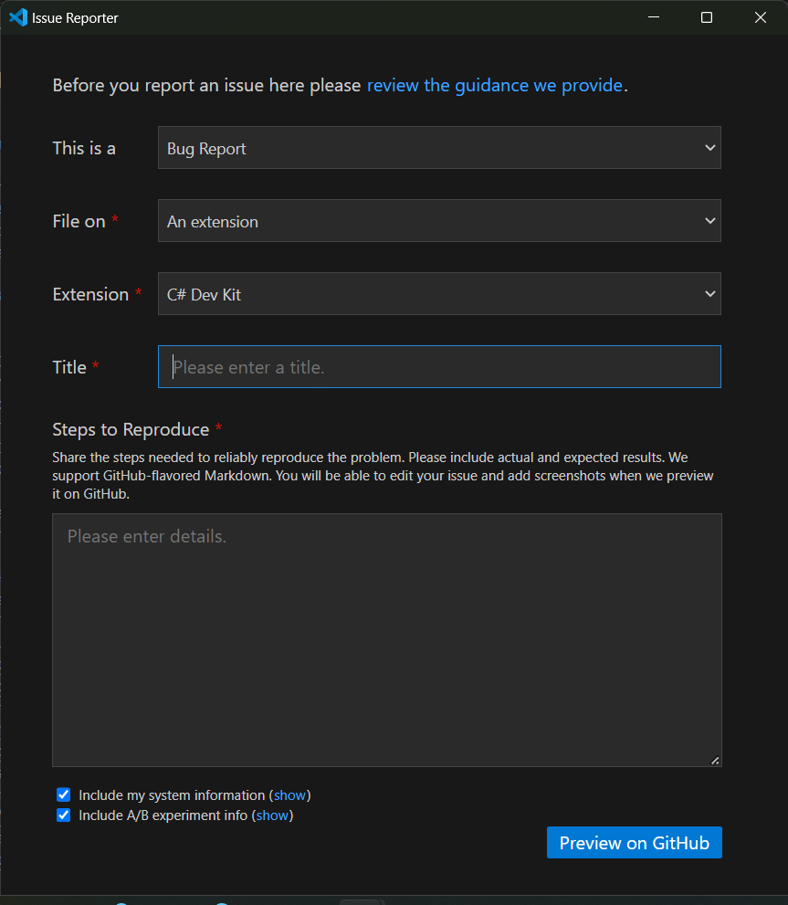
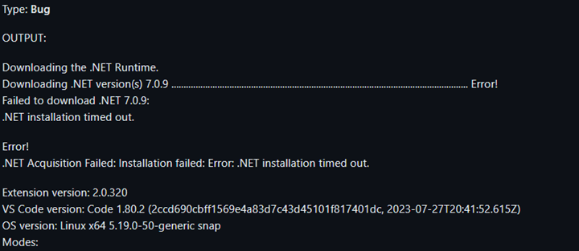
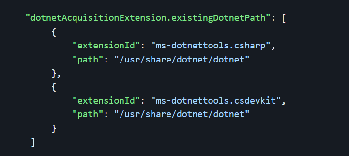
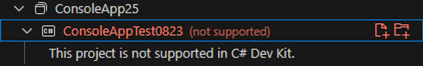
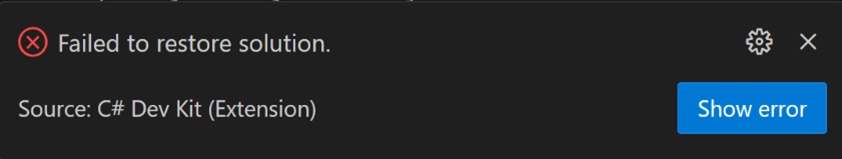
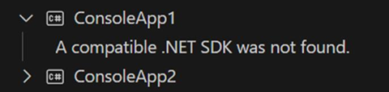
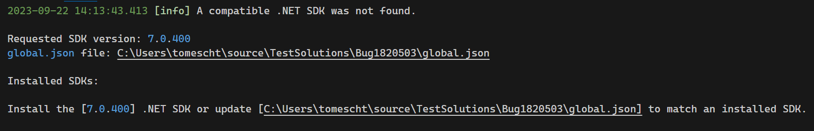
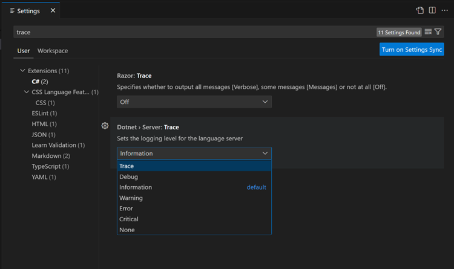
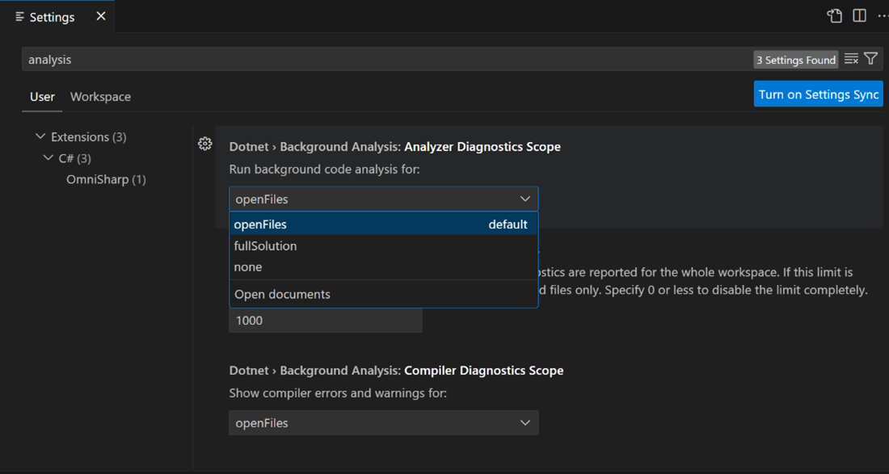
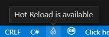

C# Dev Kit 常见问题解答
欢迎使用本常见问题解答（FAQ）主题，了解有关 C# Dev Kit 扩展的更多信息，并对您可能遇到的问题进行故障排除。
常规
什么是 C# Dev Kit？
C# Dev Kit 是一个扩展，旨在增强您在 Visual Studio Code 中的 C# 开发体验。它致力于为 VS Code 带来更全面、更高效、更可靠的 C# 体验。C# Dev Kit 不会取代现有的 C# 扩展，而是在其提供的出色语言服务功能之上进行增强。开发者可以选择继续使用更新后的现有 C# 扩展，或通过添加 C# Dev Kit 来增强他们的体验。
当前支持哪些项目类型？
C# Dev Kit 支持为 .NET Core（通常也称为 .NET）构建 Web 应用、控制台应用、类库项目和测试项目。.NET MAUI 扩展和 Unity 扩展基于 C# Dev Kit 构建，并提供对构建 .NET 多平台应用 UI (MAUI) 应用和 Unity 应用的额外支持。这些扩展支持现代 .NET 项目格式，也称为 "sdk-style" 项目。如果您正在构建非 SDK 格式的项目，例如 .NET Framework 应用和 Xamarin 应用，请参阅项目系统部分。
C# Dev Kit 包含哪些扩展？
目前，C# Dev Kit 系列中包含的扩展有：
这些扩展的使用受 C# Dev Kit 扩展系列 EULA 的约束。
这些扩展还依赖于带有自己许可协议的依赖项——例如，C# Dev Kit 依赖于 C# 扩展和 .NET Install Tool。
为什么 C# Dev Kit 没有激活 / 找不到 C# Dev Kit 命令？
在您尝试编辑 C# 文件时，C# Dev Kit 未激活的原因可能有以下几种。
- 未安装 2.0 以上版本的 C# 扩展。C# Dev Kit 要求 C# 扩展的版本为 2.0 或更高。请检查确保您已安装 C# 扩展且版本为 2.0 或更高。
- 工作区优先使用 C# 扩展。C# Dev Kit 不支持 .NET Framework 项目，如果您已将
dotnet.preferCSharpExtension设置设为 true，则该工作区将禁用 C# Dev Kit。如果项目不是 .NET Framework 项目，请确保禁用此设置。 - 使用只读操作系统。C# Dev Kit 需要对其自身的扩展文件夹以及 VS Code 为扩展提供的文件夹具有写入权限，以便在操作系统中写入任意状态，因此如果您使用的操作系统是完全只读的，C# Dev Kit 将无法工作。
如果您已检查以上几点但 C# Dev Kit 命令仍然找不到，请报告问题并提供 C# Dev Kit 的输出窗口中的信息。
许可与贡献
谁可以使用 C# Dev Kit？
C# Dev Kit 通过社区许可证提供给符合条件的用户，同时也作为现有 Visual Studio 订阅的另一项附加内容提供。这意味着拥有有效 Visual Studio 订阅的开发者现在就可以使用 C# Dev Kit。
对于个人、学术和开源项目，C# Dev Kit 可以免费使用。出于商业目的，最多 5 人的团队也可以免费使用 C# Dev Kit。对于 6 人及以上的开发者，这些用户将需要 Visual Studio Professional（或更高版本）订阅。C# Dev Kit 也包含在 GitHub Codespaces 和 Microsoft Dev Box 中，因此这些产品的用户无需额外付费即可使用 C# Dev Kit。
我在哪里提交反馈和建议？
用户可以通过 VS Code 的 帮助 > 报告问题 来报告问题或提出建议。选择是 bug、功能请求还是性能问题，提交到 一个扩展，然后从扩展列表中选择 C# Dev Kit。

Report Issue image">C# Dev Kit 是开源的？为什么不是？
不是。C# Dev Kit 是闭源的，但依赖于开源的 C# for VS Code 扩展，并且两者都与开源组件通信，例如 Roslyn 和 Razor。我们开发 C# Dev Kit 的目标之一是为使用 VS Code 的 C# 开发者提供更高的生产力体验。为实现这一目标，C# Dev Kit 包含一些与我们其他工具共有的专有闭源功能。为了让这些体验也能提供给 VS Code 用户，我们需要将 C# Dev Kit 作为闭源扩展推出。
我如何做出贡献？
C# 扩展是 C# Dev Kit 的一部分，是完全开源的，并受这些许可条款的约束。此扩展的源代码可在 https://github.com/dotnet/vscode-csharp 上获取，并以 MIT 许可证授权。
此项目已采纳 Contributor Covenant 定义的行为准则，以明确我们社区中应有的行为。有关更多信息，请参阅 .NET Foundation 行为准则。签署 CLA 后，社区可以自由地将您的贡献用于 .NET Foundation 项目。
.NET SDK
安装脚本超时
请注意，根据您的网络速度，安装 .NET Core 运行时可能需要一些时间。默认情况下，如果安装时间超过 4.5 分钟，安装将无成功终止。如果您认为允许的下载时间太少（或太多），可以通过将 dotnetAcquisitionExtension.installTimeoutValue 设置为自定义值来更改超时值。
了解有关配置 VS Code 设置的更多信息，并查看下面 settings.json 文件中的自定义超时示例。在此示例中，自定义超时值为 180 秒，即 3 分钟：
{
"dotnetAcquisitionExtension.installTimeoutValue": 180
}获取 .NET SDK 时出错

注意：如果您位于中国，您的 .NET SDK 下载可能会被阻止并导致超时。
您需要确保已安装 .NET SDK。作为一种变通方法，您可以将 .NET 运行时获取扩展指向现有的 .NET 安装：

如何手动安装 .NET？
如果 .NET 安装失败或您想重用现有的 .NET 安装，您可以使用 dotnetAcquisitionExtension.existingDotnetPath 设置。可以从 C# Dev Kit 引导教程 或 .NET 网站手动安装 .NET。要将扩展指向该安装，请按以下示例使用扩展 ID 和路径更新您的设置：
Windows
{
"dotnetAcquisitionExtension.existingDotnetPath": [
{ "extensionId": "msazuretools.azurerm-vscode-tools", "path": "C:\\Program Files\\dotnet\\dotnet.exe" }
]
}macOS
{
"dotnetAcquisitionExtension.existingDotnetPath": [
{ "extensionId": "msazuretools.azurerm-vscode-tools", "path": "/usr/local/share/dotnet/dotnet" }
]
}扩展认为我处于离线状态，错误响应为 400 或 407，并且我使用了代理
如果您的系统使用代理且注册表访问已被禁用，则需要在扩展设置中显式设置代理 URL。当通过环境变量和注册表设置代理时，扩展会自动检测到，但如果您的代理仅通过注册表键管理且注册表访问被禁用，扩展将无法找到它。要设置代理 URL，请添加以下扩展设置：
{
"dotnetAcquisitionExtension.proxyUrl": "https://your_proxy_url:port"
}项目系统
解决方案资源管理器报告我的项目在 C# Dev Kit 中不受支持
这通常是因为项目面向 .NET Framework 而不是 .NET Core/.NET。目前，C# Dev Kit 不支持 .NET Framework 项目。

要解决此问题，您有两个选项。
您可以将项目更新为 SDK 样式项目，以访问所有可用的 C# Dev Kit 功能。
或者，您可以使用设置编辑器中的 优先使用 CSharp 扩展 工作区设置，将项目和解决方案加载委托给 C# 扩展。请注意，使用此设置后，某些 C# Dev Kit 功能将不可用。要访问此设置，请转到设置编辑器并选择 工作区 选项卡。然后在搜索栏中搜索 "优先使用 CSharp"，并勾选 优先使用 CSharp 扩展 设置旁边的复选框。如果您尝试加载 .NET Framework 项目，C# Dev Kit 将自动显示一条通知，要求您将项目更新为 SDK 样式项目，或者通过从通知中选择 使用 C# 扩展 让 C# 扩展加载您的项目或解决方案。此选项将自动选中 优先使用 CSharp 扩展 设置。请注意，您需要重新加载 VS Code 才能使此设置生效。
我点击了"创建 .NET 项目"按钮但什么也没有发生
这通常发生在扩展版本不匹配时。C# Dev Kit 要求 C# 扩展的版本为 2.0 或更高。如果您使用的是 C# 扩展的 v1 版本，C# Dev Kit 和 C# Dev Kit 相关命令将无法正常工作。要解决此问题，请将 C# 扩展升级到最新版本。
项目系统报告它遇到了问题
当发生内部项目系统错误时，您通常会在 VS Code 的角落看到一个类似这样的弹出通知：

选择 打开日志 按钮以打开一个视图，显示问题发生位置的堆栈跟踪信息。选择并复制日志中的所有文本。通过 VS Code 报告问题，并确保包含从日志中复制的文本。
当我打开解决方案时，收到通知"无法还原解决方案"
选择 显示错误。这将打开 NuGet 的输出面板。通读错误信息以确定包还原无法完成的原因。如果您无法解决问题，请通过 VS Code 报告问题。
解决方案资源管理器显示"未找到兼容的 .NET SDK"
此错误最可能的原因是 global.json 文件指定了与系统上已安装的不同的 SDK。

打开输出窗口并切换到 项目 窗格以查找更多信息。您应该会看到类似以下内容：

要解决此问题，请更新 global.json 以指定已安装的 SDK，或从下载 .NET 页面安装指定的 SDK。
接下来，关闭并重新打开工作区。
也有可能是 SDK 安装的位置 C# Dev Kit 无法识别。例如，如果 SDK 是通过包管理器而不是通过 Microsoft 提供的安装程序安装的，就可能发生这种情况。要解决此问题，请通过包管理器卸载 SDK，然后通过下载 .NET 页面重新安装。
测试资源管理器
为什么我的测试不出现在测试资源管理器面板中？
确保您的解决方案包含一个测试项目。只有属于已打开解决方案的测试项目才会被包含。要查看测试项目是否属于解决方案的一部分，请在文件资源管理器中打开解决方案资源管理器视图，查看项目是否出现在树中。右键单击解决方案节点以添加现有的测试项目，或在解决方案中创建新的测试项目。
C# Dev Kit 还要求它已成功构建您的项目后，测试才会出现在测试资源管理器面板中。此外，如果对项目/解决方案执行了 清理 操作，测试 dll 将从测试资源管理器面板中移除。
一旦您已验证测试项目属于解决方案的一部分，请通过右键单击解决方案资源管理器中的解决方案并选择 构建 或使用 kb(workbench.action.tasks.build) 来构建解决方案。构建完成后，您的测试将出现在测试资源管理器面板中。
如果您的测试仍未出现，请考虑以下额外检查：
- 受支持的 .NET Core SDK：确保您正在为您的平台和计算机使用受支持的 .NET Core SDK。某些 SDK 在特定操作系统或架构上无法工作。有关更多信息，请查看官方 .NET 下载页面：https://dotnet.microsoft.com/en-us/download。
- 有效的 SDK 安装：验证是否检测到有效的 SDK 安装。您可以启用诊断日志记录来检查为您的 .NET 项目检测到哪个 SDK。请注意，通过不受支持的工具（如 ASDF 或 Mise）安装的 .NET SDK 可能无法被检测到，因为它们偏离了 Microsoft 的官方安装方法。我们建议您遵循官方说明。
- 构建输出：确认构建已完成并且已生成相应的输出二进制文件，例如
.dll或.exe文件。 - 项目加载：确保所有项目已完成加载。在解决方案资源管理器中，查看测试项目旁边是否有测试图标，以确认它们已被检测到。
我的测试出现在测试资源管理器面板中，但无法调试它们
确保您的测试面向 .NET Core。C# Dev Kit 不支持 .NET Framework 项目，尽管 .NET Framework 项目可能会加载并看起来能正常工作。VS Code 中的调试器不支持 .NET Framework。
我刚刚向我的测试项目添加了新测试，但它们没有出现在测试资源管理器面板中？
C# Dev Kit 要求它已成功构建您的项目后，测试才会出现在测试资源管理器面板中。
通过右键单击解决方案资源管理器中的解决方案并选择 构建 或使用 kb(workbench.action.tasks.build) 来构建解决方案。构建完成后，您的测试将出现在测试资源管理器面板中。
如何收集日志以排查测试资源管理器的问题？
如果您遇到测试资源管理器的问题，可以启用诊断日志记录来收集更多信息以进行故障排除：
- 提高测试资源管理器的详细程度：
转到 C# Dev Kit 设置，将测试资源管理器的详细程度设置从 minimal 提高到 diagnostic。这将生成更详细的日志。
- 检查输出窗口：
在 Visual Studio Code 中打开输出窗口，然后从下拉菜单中选择 C# Dev Kit - 测试资源管理器。诊断消息将以 [dev] 前缀显示。
- 收集以下信息：
在报告问题时，请确保包含：
- 输出窗口中的诊断日志。
- 您的操作系统及其版本（例如 Windows 10、macOS 13）。
- 您正在使用的 C# Dev Kit 扩展的版本。转到扩展视图，将鼠标悬停在扩展上以查看版本信息。
这些信息将有助于更高效地诊断和解决问题。
调试器
当我按 F5 时，什么也没有发生
确保您已打开 C# 项目，或者当前活动文档是 .cs 或 .razor 文件。如果调试器仍然无法加载，请确保 C# Dev Kit 和 C# 扩展都已被激活。
当我按 F5 时，它要求我"选择调试器"。我怎么知道该选哪一个？
如果您尝试调试 .NET 控制台应用程序、Blazor Server 应用、Blazor WebAssembly 或 Web 应用程序，请确保选择 C# 选项。其他选项可能是其他扩展的一部分，例如用于 JavaScript 调试的 Node 或用于 Python 调试的 Python，它们不属于 C# Dev Kit。
当我按 F5 时，它提示我输入密码（仅限 macOS）
macOS 默认禁用了开发者模式，如果某个程序想要用作调试器，会提示输入密码以保护用户。
如果您希望禁用这些提示，可以运行以下命令：
DevToolsSecurity --enablesudo dscl . append /Groups/_developer GroupMembership $USER为什么调试不工作？
如果您尝试调试库或测试项目，可能需要进行一些额外的步骤来确保您的代码得到正确调试。要调试库，您可以创建一个与该库交互的控制台或 Web 应用程序。对于测试项目，您可以使用测试资源管理器来有效调试您的代码。
调试时，我的断点没有绑定
您正在调试的进程不是在调试模式下构建的。请在调试进程之前确保以调试模式构建。
C# 编辑器
如何让 IntelliSense 正确工作？
确保您已打开一个项目或解决方案。如果您有多个解决方案，扩展将自动打开一个或提示您打开一个。接下来，在设置搜索栏中搜索 "Trace"，然后将 Dotnet > Server: 从下拉菜单中设置为 Trace。此选项可提供更多输出信息，以帮助开发团队诊断问题。

完成此更改后，通过打开命令面板 (kb(workbench.action.showCommands)) 并输入"重新加载窗口"然后按 kbstyle(Enter) 来重新加载窗口。重新加载窗口后，在输出面板 (kb(workbench.action.output.toggleOutput)) 中检查项目日志，并从下拉菜单中选择 项目。这将显示与您的项目未完全加载相关的任何错误。复制输出面板中的所有文本，并通过 VS Code 报告问题，确保包含复制的文本。
C# 扩展无法启动服务器
作为一种变通方法，您可以使用 dotnetAcquisitionExtension.existingDotnetPath 设置将 .NET 运行时获取扩展指向现有的 .NET 7 安装：
{
"dotnetAcquisitionExtension.existingDotnetPath": [
{
"extensionId": "msazuretools.azurerm-vscode-tools",
"path": "C\\Program Files\\dotnet\\dotnet.exe"
}
]
}
我的诊断信息太多或不够
C# 扩展允许您配置各种后台代码分析设置。要访问这些设置，请转到 文件 > 首选项 > 设置 或使用键盘快捷方式 (kb(workbench.action.openSettings))。在搜索栏中键入 "analysis" 以缩小与代码分析相关的设置范围。在 运行后台代码分析： 下，您可以从下拉菜单中选择分析范围。默认设置是分析打开的文件，但您可以将其自定义为整个解决方案、无或打开的文档。

您还可以使用 EditorConfig 文件来配置诊断和代码分析。要了解有关 EditorConfig 的更多信息，请查看文档。
如果您没有看到足够的诊断信息或根本看不到，可能是您的项目没有完全加载。要检查是否是这种情况，请参阅如何让 IntelliSense 正确工作？部分。它提供了有关如何验证您的项目是否完全加载的说明。
Razor 编辑器
大多数或所有 Blazor 组件都显示警告
在 Blazor 组件被发现之前，C# Dev Kit 需要成功加载您的项目。此外，Razor 语言服务器需要生成 project.razor.vscode.bin 文件才能了解项目的状态。如果此文件未生成，或者生成时没有包含任何组件，Razor 体验可能会受到影响。
为了提高性能，扩展有时会延迟生成或加载此文件，直到您打开第一个 .razor 或 .cshtml 文件为止。要确保解决方案资源管理器中您尝试使用的项目没有任何错误，请仔细检查。
如果您的项目已正确加载，请验证文件系统中项目的 obj\Debug\ 文件夹中是否存在 project.razor.vscode.bin 文件。由于它是二进制文件，直接验证文件内容并不容易，但通常大多数 Razor 项目生成的此文件至少为 150KB。如果文件只有几 KB，则意味着标记辅助程序和/或组件可能没有被正确发现。
要强制重新生成文件，请关闭任何打开的 .razor 或 .cshtml 文件，重新加载 VS Code 窗口，待项目正确加载后，打开任何 .razor 或 .cshtml 文件以触发重新生成过程。
Razor 文件中提到了目标框架错误
Razor 语言服务器通常没有"解决方案"的概念，而是根据项目的 obj\Debug\ 文件夹中是否存在 project.razor.vscode.bin 文件来加载项目。有时，来自不再使用的目标框架的旧文件可能会造成混淆，使 Razor 服务器认为项目是多目标的，或者某些组件仍在被引用，而实际上并非如此。
要解决此问题，请清除 obj 文件夹中旧的目标框架文件夹，或全部清除。然后，重新加载 VS Code 窗口并打开一个 .razor 文件。这应确保生成新的 JSON 文件，并移除旧的文件。
IntelliCode
我没有获得整行补全
当 GitHub Copilot 扩展被启用时，整行补全将被禁用，以便您可以利用更高级的 AI 补全 功能。您可以通过检查 VS Code 右下角是否显示 Copilot 徽标来验证 Copilot 是否已启用。
热重载
开始调试后热重载图标没有出现
只有在 C# Dev Kit 的调试器设置中启用了热重载选项时，调试器才会启动热重载会话。如果启用了该选项，在调试时状态栏中应会出现热重载图标：

您可以点击热重载图标，或者打开 C# 热重载 输出窗口来查看诊断信息。如果您没有看到其中任何一个，则可能是 C# Dev Kit 扩展不支持该项目，请参阅热重载支持的项目。
热重载支持哪些类型的编辑？
有关热重载支持的 C# 代码更改列表，请参阅支持的代码更改。